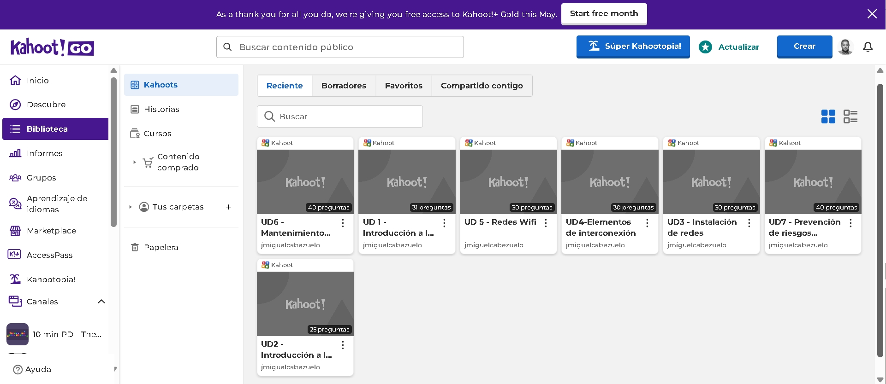

1. Kahoot (refuerzo y consolidación de contenidos)
Realizamos el siguiente kahoot para reforzar el aprendizaje del alumnado. Este cuestionario gamificado te ayudará a repasar conceptos clave sobre redes locales de forma dinámica y divertida, preparándote para las evaluaciones posteriores.

Acceso
2. Cuestionario (prueba evaluable teórica)
Realizarás un examen online a través de la plataforma Moodle que evaluará tu comprensión de los conceptos fundamentales de redes locales. El test incluirá preguntas sobre topologías de red, protocolos TCP/IP, direccionamiento IP, dispositivos de red y configuración básica.
Tendrás un tiempo limitado para completarlo y podrás consultar tus resultados inmediatamente al finalizar.
3. Reviso lo que aprendo
Reflexionamos un momento sobre todo lo que hemos aprendido hasta llegar aquí y completamos nuestro diario de aprendizaje.